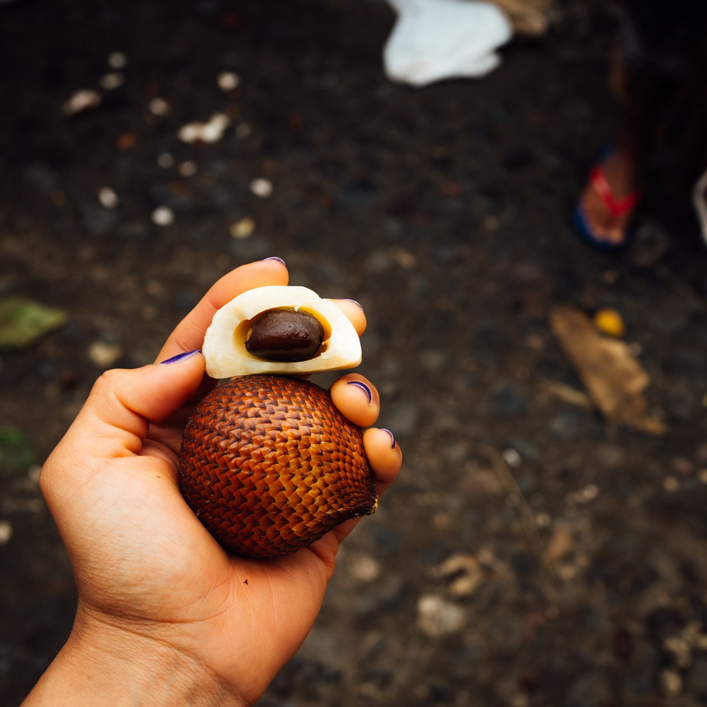
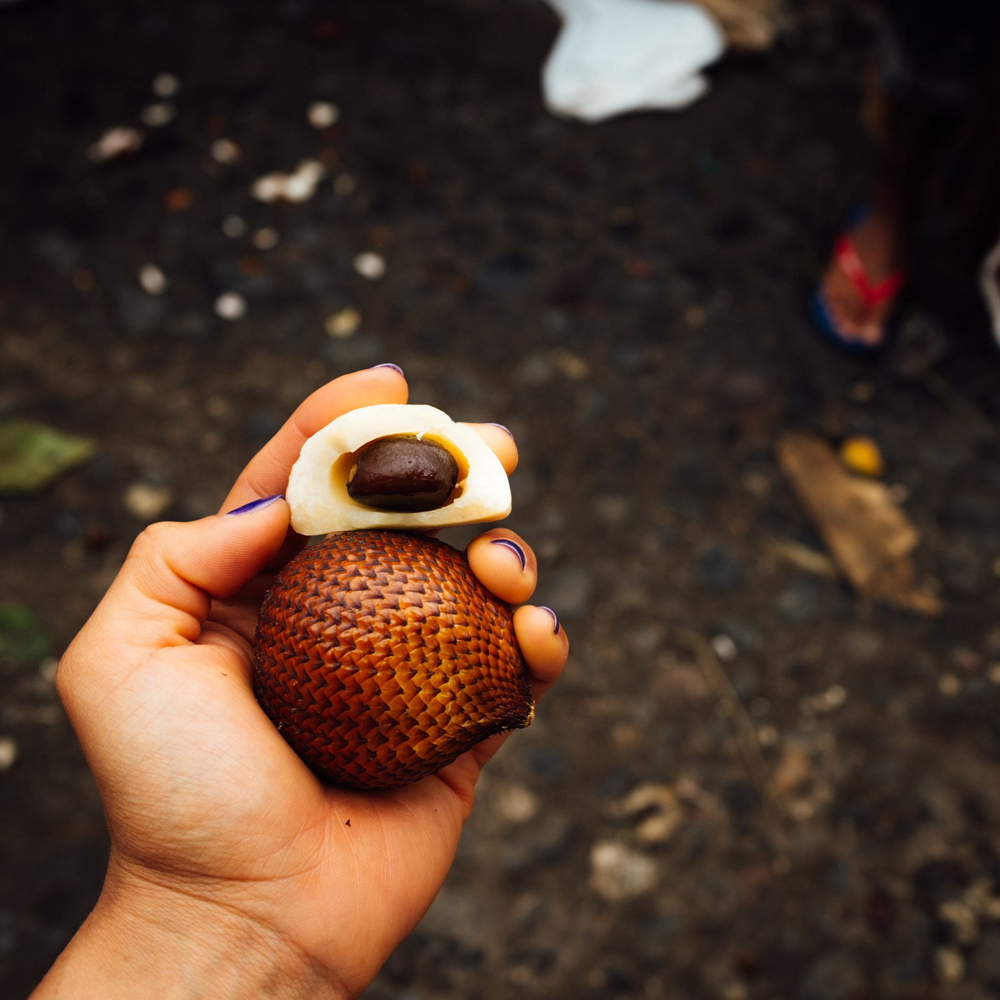
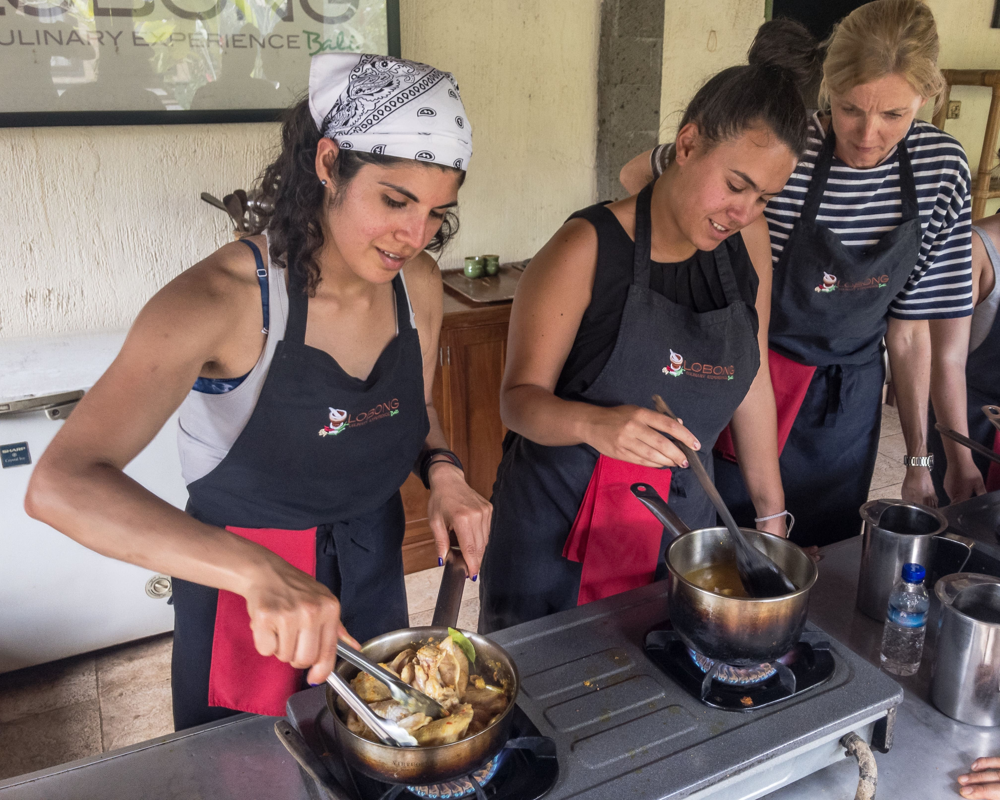
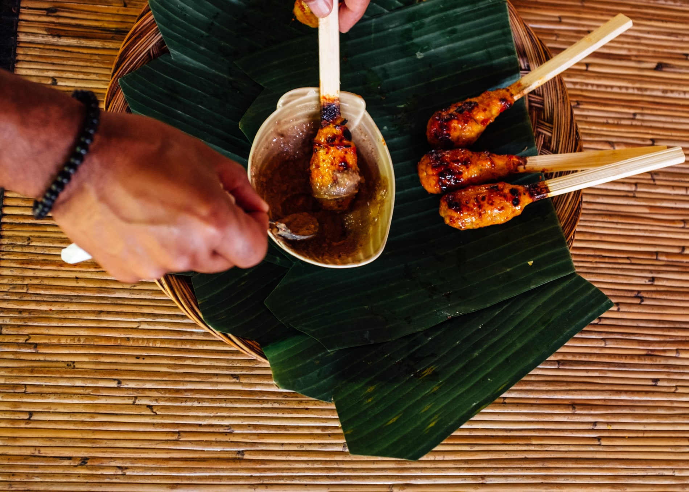
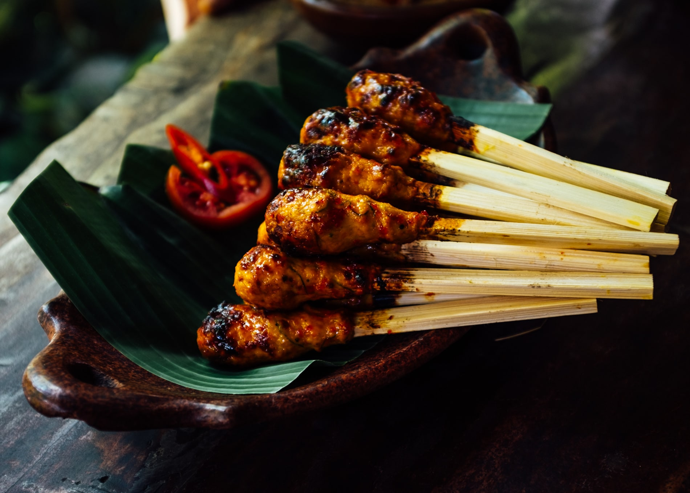
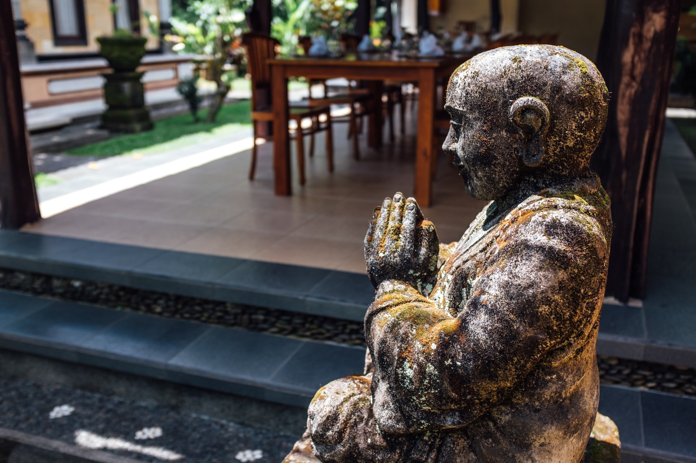

likes coffee
Balinese Kitchen
When it comes to traveling, experiencing a new culture through its food is a given. During my search for things to do (i.e. eat) in Bali, I latched on to the description for a traditional cuisine cooking class:
Begin your experience at a local market, where your Family Host will purchase and explain the fresh herbs, spices, fruits and vegetables used in your class. Once home, you’ll be greeted by Dewa with a pipping hot cup of coffee or tea and his famous Pisang Goreng, fresh made crispy Banana Fritters, to set off your taste buds. You’ll learn how to prepare a complete menu inclusive of appetizer, a variety of traditional mouth-watering entrees, accompanying dishes, and dessert.
Apart from watching two friends get married, The Lobong Culinary Experience became a top highlight in planning the trip. After the experience in Bali and a superlative experience back home, cooking courses while be at the top of my search criteria when I travel rather than “where to have the best <insert regional dish here>”.
Payangan Morning Market
The morning of the class, I was whisked away in a van from my home stay in Ubud, with the rest of the students, and driven a short distance away to the region of Payangan. Here, we got a first-hand look at an open-air market without the touristy traffic dominating the market in Ubud’s center. Our 9 am arrival was during the market’s lull given that it normally starts at 2 am and is over by 10 am. As the saying goes, the early bird gets the worm.

Our tour of the market was simply educational, meaning we didn’t actually buy anything. We stopped at a few stands with Sang Made, our market guide, and listened as he pointed out ingredients and produce of interest.
Breaking the Fast

One of the more memorable moments was at the beginning of our tour was when we looked over at a stand with a full Babi Guling (roast suckling pig) laid out ready for consumption. According to our Sang Made, Babi Guling is Bali’s breakfast of champions. The group consisting of 9 Dutch, a couple from France, and me was stunned. Fruit bowls and eggs were in the hotels and home stays! Sang Made clarified that yes, that is what is served to foreigners — not what is actually consumed in a Balinese home.
Sang Made explained that in their culture, fruits are normally used for enhancing the offerings to their gods. Fruits are fun! We inspected many that were exotic for most of us.


We inspected the ‘snakeskin’ fruit in detail. In summary, it’s mildly bland and crunchy. I’ll stick to dragon fruit next time.


 

Balinese Culture
During the course of the day, I learned about many facets of Balinese customs and rituals. Most of them related to different stepping stones to reach adulthood.
On our arrival to the Lobong family compound, conversation focused on marriage and the custom for families to ceremoniously come to an agreement about the event.
Families stick together and there’s no such thing as ‘flying the nest’. A male’s residence in his family’s compound changes location during the course of his maturity to indicate the change in hierarchy. This change in is among many intricate rules and considerations that make a Balinese traditional home. The close-knit families make it very rare to see homeless in Bali. Family compounds are forever. You will never see a family compound up for sale.
Learning more about the annual kite festival in Bali was inspirational to me. The driver that picked me up from my home stay explained that it is a rooted tradition that has many representations that have changed over time. In a few ways, it represents freedom and coming of age or a symbol of maturity. Bali’s youth took to the rice fields during dusk each day in the time I was there to practice kite flying.
Apparently, having teeth filed is a common coming of age tradition, and it made my hair rise to realize what Sang Made went through at one point in his life to get his straight pearly whites.
Although we experienced a daily Hindu offering before our meal, during the tour of Payangan market, Sang Made explained that while it’s stereotypical for women to have the kitchen role in other cultures, in Bali, it’s their responsibility to hand-make daily offerings (but in some cases the task is translated to purchasing them at the market).


This is partly because offerings symbolize beauty. As a result of this female responsibility, a man’s place in Bali is in the kitchen. Sang Made also made a point to mention that you will not see men making offerings in Bali, and if you do, that man is referred to as a “beautiful man”.
Familiarizing Ourselves with Ingredients at the Market
The primary purpose of the market tour was too have a first hand look at what ingredients would look like among market stands. We talked about the salad we would be making and a distinction was made between the greens in traditional western salads and Balinese salads. In Bali, fern tips are used rather than the common romaine, spinach, and kale.


Bumbu Bali or Base Gede is a sauce that flavors many dishes. To me it sounds like a masala you would make to flavor an Indian dish. We inspected each of the root vegetables serving a role in “bumbu Bali” (base Balinese sauce) and discussed the difficulty of being able to find these in a conventional grocery store back home.

Market Snacks
During our tour of the market, Sang Made pointed out snack food common in most markets.
We watched a sate stand owner carefully turn each stick of meat and waft air on the coconut shell charcoal to disperse heat.


As we watched a woman make what looked like a refreshing coconut jelly drink, Sang Made advised us that our stomachs may not be prepared for it, and that we should stay away. I didn’t come across a similar vendor during my vacation so I never got another opportunity to try it.


Chop Chop, Bali!
Our hosts repetitively mentioned we would soon get to go back to the family compound to get down to “chop chop!” This phrase stuck with me and we definitely did a lot of worthwhile chopping. After we licked our plates clean of our day’s work, we received a booklet with all of the recipes we’d prepared for the day.
The grunt of the work in two of our dishes was preparing the bumbu/base gede to flavor the meat. The most involved component of preparation for the day!
The preparation of the chicken for the first two chicken recipes was similar with the exception of allowing the first to poach in the sauce and finishing the second on a charcoal grill.
All recipes, with the exception of base gede, base sate, and jamu kunyit make 2 servings.
Base Gede
Basic spice base. A foundation to Balinese cooking!


Ingredients
- 300 g large red chili, halved, seeded
- 200 g shallots
- 100 g garlic
- 150 g galangal
- 75 g ginger
- 50 g kencur (lesser galangal) washed
- 175 g fresh turmeric *
- 75 g candle nut *
- 2 tsp coriander seed
- 150 ml coconut oil
- 250 ml water or chicken stock
- 1 tsp black peppercorn
- 2 pieces of lemongrass
- 2 pieces of salam/bay leaves
- 3 pieces of kaffir leaves
- 2 tsp tamarind juice
- 3 tsp palm sugar syrup
- Salt and pepper to taste
* Substitutions:
- Fresh turmeric: turmeric powder
- Candle nut: macadamia nut
Method
- Slice all ingredients except lemongrass, kaffir lime and bay leaves. Chop all until fine.
- Grind chopped spices in a mortar in pestle or a food processor until a paste is formed.
- Place paste in a heavy pan and add remaining spices (with the exception of syrup and tamarind). Simmer over medium heat for approximately 20 minutes or until water/chicken stock is incorporated and mixture turns into a golden color.
- Finally add 3 tsp palm sugar and 2 tsp tamarind juice.
- Allow to cool thoroughly before use or storage. Freeze to keep for 6 months or less. *
* If storing, remove salam leaf, lemongrass, and kaffir lime.
Ayam Bakar Sambal Matah
Shredded poached chicken, lemongrass, chili kaffir lime dressing

Ingredients
- 200 g chicken breast or leg
- 100 g bumbu bali/basic sauce/base gede
- 2 shallots
- 1 chilies
- 1 piece red banana chili
- 1 lemongrass
- 2 torch ginger
- 4 tbsp coconut oil
- a squeeze of lime juice
- salt to taste
Method
- Thinly slice the shallots, chilies, and torch ginger.
- Meanwhile, sauteé sauce until aromatic and add the chicken. Stir chicken until the well coated.
- Cook for another minute and add chicken or vegetable stock to poach for an additional 15 minutes.
- Shred cooked chicken
- Using a separate bowl, make the raw sambal beginning with kaffir lime juice and coconut and shaking until well combined. Add the sliced ingredients and toss gently until well incorporated.
- Add the shredded chicken to the final raw sambal (sambal matah).


Ayam Bakar Bumbu Bali (main course)
Grilled chicken breast, Balinese spice


Ingredients
- 2 chicken breasts, skin on
- 1/2 cup base gede
- 2 lemongrass stalks
- 2 salam/bay leaves
- 1 Kaffir lime leaf
- 500 ml coconut milk
- Salt and pepper to taste
- 1 tsp coconut oil
Method
- Heat the oil in a heavy pan and add base gede paste. Sauteé for 5 minutes until the spices are aromatic. Add lemongrass, bay and kaffir lime leaves.
- To avoid burning the paste, add a bit of chicken or vegetable stock and bring to a boil.
- Simmer stock for another 5 minutes and add chicken breast skin side down for two minutes.
- Flip chicken to coat well with base sauce.
- Add coconut milk and simmer for an additional 5 minutes.
- Remove chicken from pan and grill until well cooked.
- Place chicken back in sauce and serve with rice and vegetables.


Jukut Urab
Mixed vegetable salad, grated coconut, garlic chili dressing.


Ingredients
- 200 g shredded blanched spinach
- 200 g bean sprouts
- 100 g fern tips cut into 1/2 cm slices *
- 1/2 cup roasted grated coconut
- 1 cup sambal goreng
- 1 shredded kaffir lime
- 1 kaffir lime leaf
* Substitutions:
- Fern tips: English spinach, Chinese bok choy
Method
- Combine all blanched green vegetables (fern tips and spinach) and bean sprouts in a bowl.
- Combine fried shallot, garlic, chili, and roasted grated coconut in a separate bowl and add sambal goreng.
- Mix all together and gently toss with kaffir lime and lime juice.
Sambal goreng (fried sambal, to accompany salad)
- 6 garlic cloves, peeled
- 6-8 shallots, peeled
- 2 red banana chilies, seeded

Method
- Slice shallot, garlic, and red banana chili and keep separately.
- Heat coconut oil and fry shallots for 10 seconds before adding garlic.
- Wait for a few minutes until shallot and garlic have browned. Add chili and keep stirring for another 1 minute or until all spices have browned.
- Dry out sambal from oil and sprinkle with salt and shredded kaffir lime leaf.

Base Sate
Peanut sauce


Ingredients
- 250 g raw peanuts with skin
- 5 garlic cloves peeled and sliced
- 1-2 Thai/bird’s eye chilies sliced
- 25 g kencur (lesser galangal) washed and sliced
- 3 tbsp pal sugar syrup
- 50 ml fresh coconut milk
- 2 kaffir lime leaves
- 1 tsp kaffir lime juice
- 2 pieces of shallots
- 1 pinch salt
Method
- Combine peanuts, garlic, chilies, and kencur in a heavy pan with oil and fry until golden brown.
- Finely grind in a mortar and pestle until a paste forms.
- Place back into a heavy pan with stock (vegetable or chicken) and stir until smooth. Add kaffir lime leaf and continue to stir until sauce thickens.
- Add coconut milk and simmer uncovered. Stir to prevent sauce from sticking for 10 minutes.
- Add the lime juice and palm sugar syrup.
- Sprinkle with fried shallots before serving.
Sate Lilit Ayam
Minced chicken skewers, grated coconut, kaffir lime juice


Ingredients
- 100 g minced/ground chicken leg
- 150 g minced/ground chicken breast
- 2 cups freshly grated coconut
- 1/2 cup base gede
- 5 shredded fragrant lime leaves
- 2 tsp palm sugar syrup
- 1 tsp tamarind juice
- salt to taste
Method
- Combine minced chicken in a bowl and add other ingredients. Mix well.
- Mold a heaped tablespoon of chicken mixture around a trimmed lemongrass stalk or a wooden skewer.
- Grill until golden brown.
- Serve with peanut sauce.
 
Sambal Ulek
Tomato and chili sambal. Served as a sauce to flavor rice.

- 10 shallots, peeled and sliced
- 5 garlic cloves, peeled and sliced
- 3 large red chilies
- 2 medium Roma tomatoes cut into wedges
- 2 tsp freshly squeeze kaffir lime leaf
- Coconut oil
- Salt to taste
Method
- Heat the oil in a heavy sauce pan or wok. Add shallots and garlic and sauteé for 5 minutes over low heat.
- Add chilies and sauteé for another 5 minutes.
- Add tomatoes and simmer for another 10 minutes.
- Add kaffir lime juice and grind all ingredients into a mortar and pestle. Alternatively, use a food processor to blend the sauce.
- Season with salt to taste and allow to cool before serving.
Nasi Sela
Sweet potato rice
I didn’t photograph the preparation of this dish given that making it took place in a dimly lit kitchen with a stove heated with wood. The process of making Nasi Sela, or steamed rice with sweet potato, takes at least an hour and twenty minutes. This steaming process allows each grain to cook to a point in which it will not stick to any other grain. This dish is the first to be prepared in a Balinese home given the amount of time it takes. While the rice cooks, other dishes can be prepared.
Ingredients
- 200 g rice, washed twice
- 100 g cubed sweet potato/butternut pumpkin
Method
- Clean the rice then soak in water for about 20 minutes
- Steam the rice until half cooked (al dente), approximately 30 minutes.
- Soak again in hot water for around 15 minutes or until the rice absorbs all the water.
- Finally, mix the rice with cubed sweet potato and steam again for 30 minutes.
- To serve, sprinkle fried shallots for additional flavor.
Easy right?
Bubur Injin (dessert)
Black rice porridge with coconut milk and palm sugar.

Ingredients
- 200 g black glutinous rice, washed
- 120 ml palm sugar syrup
- 2 pandan leaves, shredded, or 2 drops pandan or vanilla essence.
- 250 ml coconut milk
- Pinch salt
- Fresh coconut to garnish
Method
- Soak the glutinous rice in water overnight.
- Drain the rice and place in a saucepan with 1.5 liters of water. Heat the mixture until boiling and continue to cook for 20-25 minutes, or until the rice is tender.
- Stir the sugar and one of the pandan leaves into the rice and continue to cook for 5-7 minutes. Set aside to cool.
- Meanwhile, heat the coconut milk, remaining pandan leaf and the salt in a saucepan until the mixture thickens.
- To serve, remove the pandan leaves from the rice into 2 serving bowls. Pour over the coconut milk and garnish with fresh coconut.
Jamu Kunyit

Ingredients
- 100 g tamarind paste (smashed)
- 150 g turmeric
- 100 g palm sugar syrup
- 1 lime wedge
- 500 ml water
Method
- Mix all ingredients except lime and simmer for 20 minutes
- Sit aside and let cool. Run through a fine sieve.
- Serve with ice and lime wedge as garnish.
Pisang Goreng
Fried banana fritters

Ingredients
- 6 bananas, halved lengthwise and horizontally.
- 1 cup all purpose flour
- 1/4 cup coconut milk (cream)
- 1 cup dried and shredded unsweetened coconut
- 1/4 cup white sugar
- 1 cup water
- 1/2 tsp salt
Method
- In a large bowl, mix dry ingredients (flour, white sugar, salt).
- Make a well in the center of the incorporated dry ingredients and pour in milk and water. Mix until smooth.
- Fold in banana slices until evenly coated.
- Heat oil in a wok or deep fryer to 375ºF (190ºC).
- Drop banana mixture by tablespoon into hot oil and fry until golden brown and crispy on the outside (about 10-15 minutes).
- Remove banana from oil and drain on paper towels. Serve hot with palm sugar syrup.
Daily Rituals

Before we ate, we followed tradition to honor Hindu gods with offerings from the food we prepared that morning. Sang Made’s mother did the honors. Usually, these honors are done early in the morning after the day’s food has been prepared and is set aside in the kitchen for whoever is hungry to come and go as they see fit. Balinese rarely eat sitting down together, according to Sang Made.


After we stepped out of the temple we sat down at a table set in the central courtyard of the family compound and waited for each course to be served. My phone was dead at this point and the rest of my classmates were Dutch or French, so focusing on each bite and appreciating the work that had gone into creating each dish was how I kept myself occupied. I had given up on pretending to understand the Dutch and French conversations that dominated the group around me much earlier in the day.
READ THIS NEXT:
Cooking with Cocco
It’s not every day I take cooking classes on a whim, and definitely not when the cost is more than what I would ever pay for a dinner, but cooking with Cocco at Izakaya Rintaro felt very special and I...